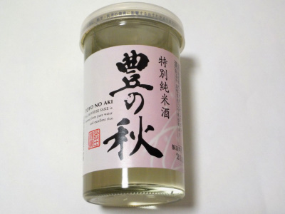
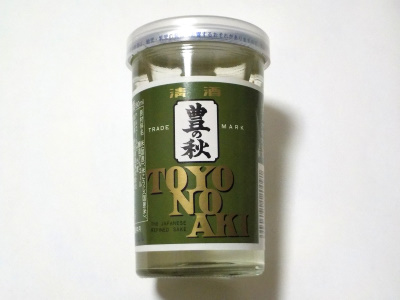
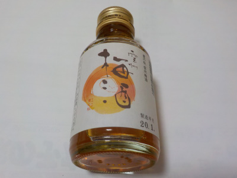
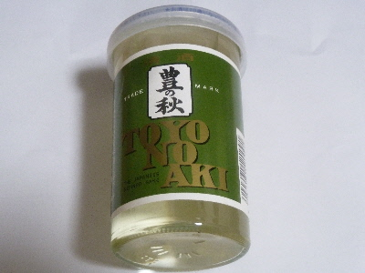

米田酒造の特別純米酒豊の秋
2024/01/26

300円を超える価格のワンカップは美味しいですね。
これといった特徴はないんですけど、日本酒らしい美味しさがあると思いました。
これからは毎回300円以上のお酒を飲もうかと思いましたが、予算がないかな。
島根県松江市東本町3丁目59番地
2024/01/26

300円を超える価格のワンカップは美味しいですね。
これといった特徴はないんですけど、日本酒らしい美味しさがあると思いました。
これからは毎回300円以上のお酒を飲もうかと思いましたが、予算がないかな。
2023/11/12

雑味が少なくて軽くて飲み易いです。
ちょっとフルーティーで甘くて美味しかったです。
醸造アルコールの使い方が上手なのかなー？。258円でこれはいいな。
2020/05/30

以前に買ったもですが、今日思い出して飲みました。
100ミリリットルの小さな小瓶入りです。
原材料が清酒のリキュールだそうです。
梅酒なので砂糖で甘いんですが、梅味が濃くてスッパイ感がありました。
食前酒にいいかなって思いました。美味しかったです。
2018/07/16
ちょっといいお酒は美味しいですね。
清酒 上撰 豊の秋です。

味が濃いけど嫌な味がしない。
ちびちび味わって飲みました。